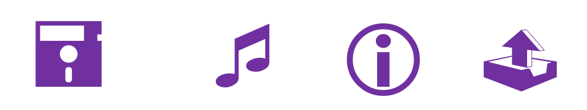

Glifo
Glifos, em inglês glyph, ou pictogramas, são símbolos figurativos que representam objetos ou criaturas do mundo real, ou visam transmitir ideias e conceitos. Símbolos de trânsito, ícones de aplicativos, favicons, ícones de logomarcas são exemplos de glifos. No design gráfico os tipos mais utilizados de glifos são os ícones que podem vir como ícones de interfaces e logos.
Logo e Ícone
Logo (do latim Loco) é o glifo, ou símbolo, utilizado juntamente com o nome de uma marca. Enquanto a marca é a parte tipográfica, o tipo, logo é o símbolo ou ícone da marca, ambos juntos formam o que se costuma chamar de logomarca ou logotipo. Os logos podem possuir detalhes, podem até ser ilustrativos ou abstratos, mas devem necessariamente transmitir uma única ideia, geralmente associada ao valor que a marca quer passar.
Já ícones, são glifos utilizados em sites, em sinalização e em botões de aplicativos e softwares, assim como favicons, devem ser simples, adaptar-se a dimensões pequenas e transmitirem sua função visualmente de forma instantânea.
Favicons (favorite icons) são os logos que aparecem num site, na aba do navegador e em outros locais específicos como botões main (que direcionam para o início da página). A diferença entre um favicon e um ícone é que o favicon é uma logo utilizada como ícone.
Vejamos alguns exemplos:
Glifos básicos da fonte Webdings
Ícone
Logo

Em relação aos logos, que são os tipos de glifos mais trabalhados em design gráfico, eles podem ser feitos a partir de figuras, de uma letra que pode ser a inicial do nome da empresa e até do nome da empresa inteiro, o estilo pode ainda ser manuscrito, abstrato, ilustrativo entre outros.
Em nosso próximo tutorial criaremos um glifo do zero. É bom lembrar que ao criarmos desenhos para logomarcas devemos pesquisar bem para não copiar de uma existente, o que pode render disputas de direitos autorais. Alguns passos são necessários ao iniciar um trabalho, entre eles são:
1. Entre na web e pesquise imagens de referência para ter inspiração, mas não copie.
2. Crie alguns esboços à mão para testar formas e combinações.
3. Avalie se seu desenho precisará ser exibido em tamanho muito pequeno como em favicons e ícones num smarphone, ou se precisará ser exibido em tamanhos muito grandes como em outdoors ou fachadas de edifícios e como ele se comportaria nestas situações. Ficaria difícil de ler ou de entender? Poderia transmitir uma ideia diferente da que você quer passar?
4. Passe o desenho para o computador.